A little website for the people who are interested.
Bad Roses is a horse community, with an in-game club and an open community Discord. Browse the item and beauty database, follow the quest and reputation guides, or check the weekly Spirit and championship schedules in UTC+1.
Joining the waitlist is not the same as joining the in-game club. Club openings are handled through the waitlist channel.
Find Bad Roses online
Follow the petals.
Join the conversation, meet the club, and see what’s happening around Jorvik.
Come say hello
Community Discord.
Join our open Discord community to meet active players and make new friends. If you want to join the Bad Roses club in-game, you can sign up for the waitlist there.
Official social platforms are run by their respective companies. External links open their websites or apps.
Quest library
Guides for quests across Jorvik.
Browse step-by-step unlock guides, requirements, routes, and troubleshooting help for quests from different regions and storylines.
Available quest guides
Choose a questline
Quest guide 01 · Early game
Unlocking Silverglade Village and Steve’s Farm
Level 4–5MoorlandSilverglade
Silverglade VillageSteve’s Farm
Before you begin
Unlock requirements
Player level
Reach Level 4 or 5.
Prerequisite quests
Complete the main introductory quests in Moorland with Tan and Loretta of the Bobcat Girls, unlock Fort Pinta, and finish the early tasks involving Ydris and Maya.
Step-by-step unlock questline
From Moorland to Silverglade
01
The Stolen Deed
Progress through the Moorland storyline until Thomas Moorland’s stables are threatened. A masked rider, Sabine, appears and steals the original deed to Moorland Stables.
02
Catch the Masked Rider
Accept the quest from Thomas or Maya and follow the quest markers to chase the thief. Catch the rider and recover the stolen documents.
03
Ride to Silverglade Village
After recovering the deed, take it directly to the Councilman in Silverglade Village so it can be kept legally safe.
04
Follow the Route
Ride north past the Bobcat Girls’ racing track in Moorland and follow the main dirt path. Silverglade Castle will appear on the horizon; the village sits below and slightly north of it.
05
Unlock Steve’s Farm
Steve’s Farm sits just outside the Silverglade Village walls. Speak with the Councilman and complete the initial Silverglade introductions to unlock Steve as a quest giver and make his farm available as a Home Stable.
Quest guide 02 · Harvest Counties
Repairing the Bridge and Reaching Jarlaheim
Bridge repairWolf Hall InnJarlaheim
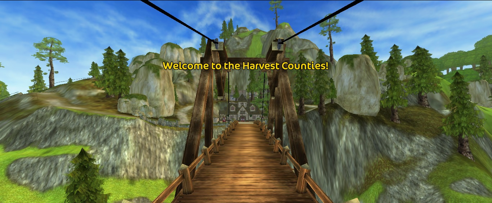
The bridge into the Harvest Counties
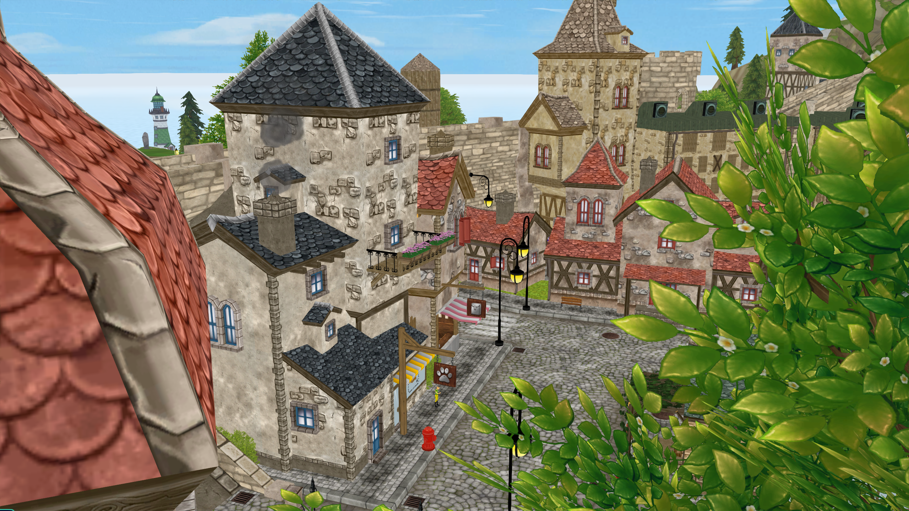
Jarlaheim
Building materials
Speed up the bridge repair
The construction shop is next to Donald’s truck and equipment at the bridge site. You can buy the required materials there instead of completing the daily chores.
Treated Planks
200 Jorvik Shillings or 5 Star Coins
Cement
200 Jorvik Shillings or 5 Star Coins
Caulking
Buy missing caulking from Billy Bulldozer near the bridge area.
Step-by-step questline
From the bridge to Jarlaheim
01
Find Donald’s Construction Shop
Go to the bridge construction site. The material shop is beside Donald’s truck and the nearby equipment.
02
Collect or Buy the Materials
Complete the daily chores or purchase Treated Planks and Cement for 200 Jorvik Shillings or 5 Star Coins per item. Billy Bulldozer also sells caulking near the bridge.
03
Finish the Required Story Quests
Buying materials only speeds up construction. Complete the related quests from Holdsworth and Conrad, even if you obtain the materials from GED.
04
Complete the Bridge Repair
Return to Donald and finish the bridge repair. This opens the route to the Wolf Hall Inn on the other side.
05
Speak with Ed
At the Wolf Hall Inn, talk to Ed and accept the quest called “On the other side of the bridge.”
06
Continue through the Harvest Counties
Follow this questline through Jarlaheim and Paddock Island. Ed’s final quest is called “Over mountains, through forests,” which takes you farther into the area to meet Ms. Pike.
07
Explore the Region
Continue exploring to discover Jarlaheim, Paddock Island, and Jorvik Stables.
Quest guide 03 · Fort Pinta
James’s Treasure Hunt
Multi-day questStarts in Fort Pinta
Part 01 · The map
Find the missing pieces
Start with James in Fort Pinta. He has one piece of Mississippi Jones’s treasure map and needs your help finding the other three.
01
Godfrey at Silverglade Winery
Find the butler behind the username Butler_01. He’ll trade his piece for a share of the treasure.
02
California Jones’s grave
Check the bushes in the northeast corner of Doyle’s Abbey. The dandelions on the grave point to Mrs. Holdsworth in Moorland. She has the next piece.
03
Washington Jones’s collection
Ask the Councilman in Silverglade Village about the will, then visit the Councilman in Firgrove. Search by the old mine outside Firgrove and report back to him with the final piece.
Part 02 · The route
Follow the seven clues
Starting point
Fort Pinta’s entrance
Bring the pieces to James. Once he assembles the map, cross the bridge into Fort Pinta and check the wall on your left for the green quest marker.
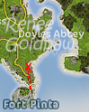
Clue 01
The road to Doyle’s Abbey
Look for a stone in the sand just off the road from Fort Pinta.
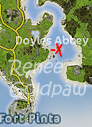
Clue 02
The river mouth
Follow the beach to the river and check the smallest stone pillar.
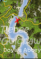
Clue 03
The bridge toward Firgrove
Cross the bridge toward Firgrove, then turn right and search the beach.
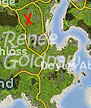
Clue 04
Fields of Gold
Face Silverglade Castle from the bridge. Search between the stones in the field along that line.
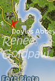
Clue 05
The three-way junction
Take the road back toward Fort Pinta. Check the wall where three roads meet.
Clue 06
The cliff above the road
Ride up the nearby cliff and look for a flowerpot at the top.
Clue 07
The druid circle
Ride toward the castle and inspect the large stone at the center of the monument.
Part 03 · The ritual
Gather the four stones
Ask Elizabeth Sunbeam in Valedale to read the runes. She’ll send you to collect four stones for the ritual.
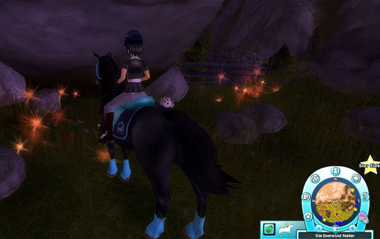
Everwind Fields
Red volcanic rock
Ask Bengt, then search the rock piles behind the cliff.
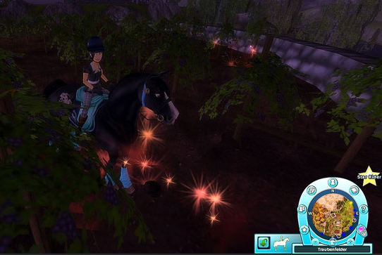
Silverglade Winery
Earth Stone
Talk to Judy and check the edges of the vineyard fields.
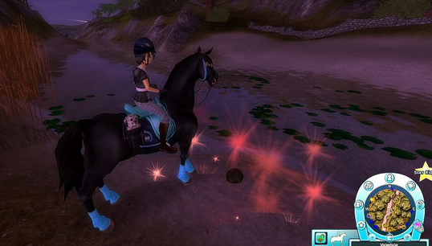
Silversong River
Moss Stone
Search the beach beside the river.
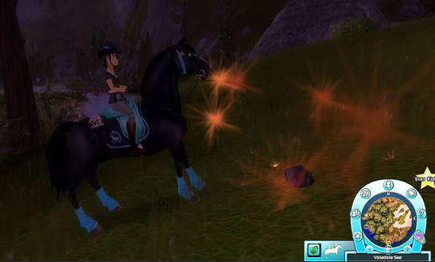
Road to Valedale Lake
Star Stone
Check the rocky outcrops along the climb to the lake.
Part 04 · The treasure
Solve the runestone
Bring the stones back to Elizabeth, then read the runestone. Place the stones in this order, starting at the center and working outward.
Red volcanic rock
Earth Stone
Moss Stone
Star Stone
Click a placement spot if you need a hint.
Quest guide 04 · Across Jorvik
Secret Quests
Three hidden questsStar Rider
You’ll need Star Rider and access to Goldenhills Valley to complete all three quests.
01 · Thorny Banks
Message in a Bottle
Pick up the bottle floating between two rocks just before Thorny Banks.
Look for the carved tree at the edge of Hollow Woods. Landon and Anna’s names and the year 1972 identify it.
Talk to Landon, then deliver his reply to James in Fort Pinta.
After the first launch fails, speak to James again. Find gunpowder and use the cannon to send the bottle.
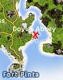
Bottle location
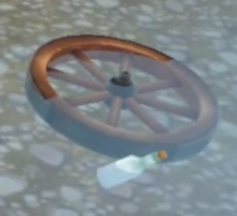
What to look for
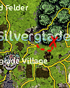
Carved tree solution
02 · Firgrove road
A Package by the Side of the Road
Follow the road toward Firgrove and look beside the fence for the package.
Take the package to Derek. He can make out only part of the address.
Deliver it to Felicity in Firgrove.
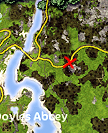
Package location
03 · Goldenleaf Woods
A Mysterious Dirt Pile in the Forest
Follow the road into Goldenleaf Woods and keep straight until you see the dirt pile between three small mounds.
Borrow Jasper’s shovel and dig at the pile to uncover a chest.
Get a crowbar from Bob and Rob in the Smugglers’ Cave and use it to open the chest.
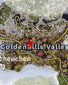
Dirt pile location
Quest guide 05 · 2018 archive
Main Quests
Story progressionThrough December 2018
Follow the main story from the original Moorland opening through the 2018 search for Concorde. Open a chapter to see its starting point and key quests. The chapters contain story spoilers.
01Welcome to MoorlandJustin, the Bobcats, and the stolen deed
Meet Justin and the Bobcats. Take your first riding lesson, meet the stable staff, and try the Bobcat track.
Help Thomas Moorland. Follow his fight to keep the stables open. Ask Jasper about the old land papers.
Stolen Documents. Chase down the masked rider. After recovering the deed, take the copies to the Councilman in Silverglade Village.
Thomas Moorland
02Silverglade Manor and SabineHarold’s delivery and Justin’s letter
Flour for Cupcakes. Help Harold with the castle delivery. Follow up with Godfrey at Silverglade Manor as the investigation moves to the estate.
Whose Horse Is That? Meet Sabine at the manor and ride the vineyard track.
Sabine’s Request. Deliver her letter to Justin. Help Thomas look for his son and follow the trail back to the manor.
Silverglade Village
03The missing LindaFamily records, Valedale, and the letter trap
A Total Soap Opera Twist. Search for Anabelle Silverglade’s marriage records.
Looking for Clues. Follow the leads about John Sandman before going to Valedale.
The Journey to Valedale. Speak with Elizabeth Sunbeam, follow her investigation, and take what you learn back to Alex.
The Letter Trap. Get a stamp from Judy and mail the decoy letter. Help Alex identify who picks it up.
The Truth Unfolds. Speak with the Baroness, obtain the castle key, and free Linda.
04The Keepers of AideenThe Druids, Dark Core, and the Pandoric rifts
Continue with Alex, Linda, and Elizabeth to meet the Druids at the Secret Stone Circle.
Follow the Dark Core investigation from Moorland to the offshore rig as you search for Justin.
Learn to seal Pandoric rifts and keep up with the Druids’ reputation quests when the story pauses.
05Starshine and the return of LisaGreendale and the Sleeping Widow
Follow Starshine’s lead near Jarlaheim and investigate the Pandoric crack with Linda.
Find the Sleeping Widow. Bring her the light and tears of Aideen to awaken her and help free Lisa.
Follow up with Lisa and the Druids, then continue the Aideen’s Song chapter.
Jarlaheim in the Harvest Counties
06Find Justin on South HoofLinda’s lead, the Hermit, and the return to Elizabeth
Follow up with Linda after the Dark Core oil rig storyline. The original route also used Liked reputation with the Lightning’s Inner Circle.
Travel to South Hoof and follow the Hermit’s trail to Justin. Help the Moorlands and return to Elizabeth to continue the story.
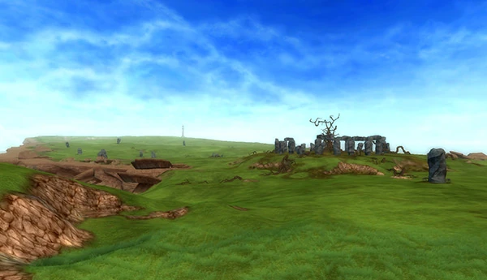
South Hoof Peninsula
07The first journey to PandoriaThe keystone, Anne, and Evergray
Help the Druids prepare the portal. Follow the vault and Stonecutter trials to recover the keystone.
Cross into Pandoria, find Anne, and escape to the Secret Stone Circle.
Continue with the Pandoria Codex and meet Evergray in New Hillcrest. Follow the rift investigation into the next story chapter.
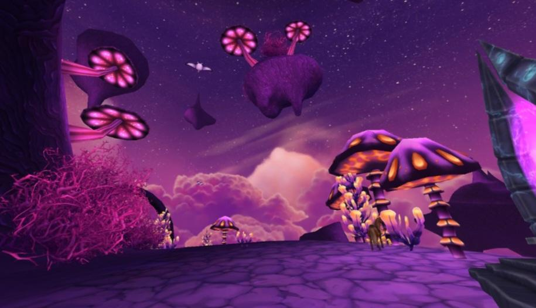
Pandoria
08Ydris and ConcordeJuly 2018 · The Circus of Dreams
Help Alex in Dino Valley, then meet Justin in Moorland. His lead on Concorde takes you to Ydris’s circus.
Ask Pi for help with the barrier, get through the maze, and finish Ydris’s race to escape the circus.
Work with Evergray and Big Bonny on the clock. Return to the circus, stop the breach, and meet Rhiannon and Concorde in Valedale.
Quest guide 06 · 2018 archive
Side Quests
Optional questlinesGrouped by area
Choose an area to browse documented side questlines available by the end of 2018. Each entry gives you a starting point or a landmark to look for.
01Moorland and Fort PintaLocal errands, hidden finds, and James’s map
The Unhappy Cow. Help with the dandelion brew used to treat Rosie.
Fort Pinta Advertising. Follow James’s errands and help with the photographs for Fort Pinta.
James’s Treasure Hunt. Start with James in Fort Pinta and recover three missing map pieces. The Quests tab has the complete clue and stone walkthrough.
Message in a Bottle. Pick up the bottle near Thorny Banks. Its clue leads to a carved tree in Hollow Woods and then to Landon.
Mississippi Jones’s treasure map
02Silverglade Village and Steve’s FarmThe clock, Steve’s mice, and Will’s race
Flowers for the Shop. Follow the Silverglade Village shop errand to collect flowers.
The Broken Silverglade Clock. Ask the Councilman about the clock. Follow the trail to find the clockmaker, Big Bonny, and help with the repairs.
While the Cat’s Away. Help Steve deal with the mice. Follow the farm errands for cheese and grain.
Try the Windmill Race. Talk to Will at his mill and ride the course he introduces.
Will
03Silverglade Equestrian CenterA ghost in the wine cellar
A Ghost in the Wine Cellar. Speak to Tyra at the equestrian center. Investigate the cellar and help the GED trainee cover the damage by repairing it before the Baroness finds out.
Follow the repairs through the concrete delivery and finish the cellar work with the trainee.
04Nilmer’s HighlandYdris’s fortune tent · 2018
The Amazing Ydris, Teller of Fortunes. Visit the fortune tent at the Circus of Dreams in Nilmer’s Highland. Interact with the tent to see Ydris’s prediction.
After the introduction, fortune telling becomes a repeatable visit.
05Firgrove and Goldenhills ValleyA lost package, Gretchen, and a buried chest
A Package by the Side of the Road. Check the fence along the Firgrove road. Take the package to Derek, then deliver it to Felicity.
Gretchen Is Missing. Follow the family’s trail into Goldenhills Valley. Continue Helga and Gunther’s quests toward the summerhouse storyline.
A Mysterious Dirt Pile. Look between the small mounds in Goldenleaf Woods. Borrow Jasper’s shovel and get a crowbar from Bob and Rob to open the chest.
Goldenhills Valley
06Harvest Counties and EponaThe bridge, Jarlaheim, and Herman’s route
Repair the Harvest Counties bridge. Help Donald collect the construction materials. Cross to Wolf Hall Inn and speak to Ed to continue toward Jarlaheim.
Jarlaheim and the road to Epona. Follow the mayor storyline and work for Ms. Drake at the GED office. The historical route also ran through the family and Dino Valley questlines before Herman’s message.
Harvest Counties bridge
07South Hoof and Jorvik CityMadison, Nightdust, and the Pier 13 investigation
Madison and Nightdust. Follow Madison’s pony storyline from South Hoof. When the investigation reaches Jorvik City, meet Anastasia and Erik at the mall and continue to Pier 13.
Return the suitcase. Follow the address to the storage building, investigate Mr. Anwir’s lab, and help Madison and Nightdust get out.
Jorvik City and Pier 13
08Valley of the Hidden DinosaurNic’s expedition and the Kallters
Stoneground’s camp. Follow Nic’s balloon storyline into the valley, then help him and Professor Einstein with their camp and exploration quests.
The Icengate expedition. Investigate the northern mountain and follow the tracks to meet the Kallters.
The Kallters at the Icengate
Jorvik progression guides
Build your reputation.
Find the quests and reputation milestones that unlock new areas, storylines, and horses across Jorvik.
Choose a reputation guide
Select a guide to open it. Select it again to close it.
Nanook and Sedna · The Kallters’ outer expedition
Unlock levelLevel 15Reputation pathNeutral to PopularRegionDino Valley
01
2016–2018
Dino Valley and the Kallters
Open the mountain pass into the Valley of the Hidden Dinosaur, then follow the expedition quests to the Icengate.
Unlock Dino Valley
Level and reputationReach player Level 15 and earn Liked reputation with Valedale.
Nic’s balloon and the passHelp Nic Stoneground launch his balloon from Everwind Fields. Then speak to Elizabeth in Valedale and follow her quest to check the mountain pass.
Find the Kallters
Help Nic Stoneground.Once inside the valley, help Nic with his crashed balloon and complete the exploration and camp setup quests with him and Professor Einstein.
Discover the Icengate.After roughly three days of consistent questing in the valley, a quest leads you up the Hidden Road to the massive frozen Icengate.
Meet the outer expedition.Outside the gate, you finally meet Nanook and Sedna, the representatives of the Kallters’ outer expedition.
The reputation grind
Once unlocked, the Kallters work primarily as a reputation faction. Build their trust from Neutral to Popular to access their exclusive items and Generation 1 Fjord horses.
Repeatable quests
The dailies
Gather valley resources to earn reputation with the Kallters.
Call stones
Ice
Thistles
Ice berries
Ice chestnuts
Snow weasels
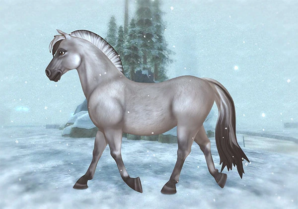
Reputation reward
Generation 1 Fjord
At Popular reputation, you could buy one outside the Icengate.
About 850 Star Coins
The secret route through the Graydew Mountains
Minimum levelLevel 14Required standingFriendly with GEDDestinationEpona
02
Harvest Counties
Unlocking Epona
Build your reputation in Jarlaheim and follow Herman’s message to begin the route into Epona.
Updated unlock requirements
Player levelReach Level 14 or higher.
Harvest CountiesRepair the bridge from Moorland to open the region.
Jarlaheim storyFinish the mayor storyline and the quests from Jill and Ms. Drake.
GED reputationDo Ms. Drake’s daily quests until you reach Friendly with the GED Jarlaheim Office.
The later update removed the Dino Valley exploration and Firgrove tourist quests from Epona’s prerequisites. Herman’s text can arrive while you still have Jarlaheim quests to finish before the gates open.
Earlier reputation checklist (2016–2020)
GED Jarlaheim Office with Ms. Drake
Jorvik Stables
The Goldspur Family
The Jarlasson Family
Earlier quest checklist (2016–2020)
The Harvest Counties BridgeRebuild the bridge connecting Moorland to the Harvest Counties.
The Jarlaheim Mayor storylineHelp Jack Goldspur resolve Jarlaheim’s mayoral problems.
The German Spies and GretchenFind Gretchen around Fort Pinta and Hollow Woods, then help solve her family’s problems.
The Summerhouse ScamComplete the Newcomer questline and help Helga’s family deal with Mr. Kembell’s summerhouse scam.
Dino Valley explorationTalk to Nic Stoneground and help establish his camp in the Valley of the Hidden Dinosaur.
Ms. Drake’s reportsComplete her daily GED work in Jarlaheim through “A Step Up in Your Career?”, where you deliver her report to Herman.
Unlocking the secret path
The message.Herman sends an urgent text asking you to meet him at Jorvik Stables.
Operation Grim Harvest.Herman reveals GED’s dangerous expansion plans and asks you to sneak past them.
The compass and the gates.Help the Goldspur family secure a special compass that reveals the hidden trail.
Graydew Mountains.Travel through the secret, trap-filled mountain path and emerge on the other side in Epona.
The North Iron Gate · Goldenhills Valley
Historical period2014–2018 onlyTypical level in 2018Level 14–15Required standingLiked with Silverglade
03
2014–2018 only
Unlocking Goldenhills Valley
These requirements describe the ways to open the North Iron Gate in 2014 and 2018.
Goldenhills requirements in 2018
Player levelMost players needed to reach Level 14 or 15. Players who maximized their daily reputation tasks could occasionally trigger the quest around Level 13.
Silverglade reputationYou need a Liked reputation level with Silverglade.
Prerequisite questlines
Mysteries of the Circus with Ydris
The Meeting in Sacred Grove
The Baroness’s dog Techno and the quest to secure the riding arena
Opening the North Iron Gate
Finish Techno’s quests.Find a new home for the Baroness’s watchdog and help build his doghouse. The follow-up leads into the gate storyline.
Get a picture of the key.Follow the Silverglade Councilman’s investigation, obtain the camera, and get the key photo printed.
Work with Conrad.Bring the photo to the blacksmith in Moorland, collect more iron ore, and finish the apprentice quests while he makes a replacement.
Open the valley.Collect the finished key and follow the gate quests into Goldenhills Valley, including the southern gate follow-up.
How it changed from 2014 to 2018
The quests stayed the same
The route still used the main Silverglade storyline, including Mysteries of the Circus, The Meeting in Sacred Grove, and the final “The Key Is Ready” quest from the Councilman or Mayor.
The usual level increased
Around 2014, players commonly reached this point at Level 12 or 13. By 2018, added early-game quests awarded more experience, so players often reached Level 14, 15, or even 16 before receiving the Goldenhills key quest.
Help Helga, Gunther, and Gretchen
Open Goldenhills Valley before following the missing Gretchen storyline, since the search sends you into the valley. After finding Gretchen, continue the family’s quests and Mr. Kemball’s storyline to reach the summerhouse episode.
Generation 2 Welsh Ponies · South Hoof Peninsula
Minimum levelLevel 7Reputation pathNeutral to FriendlyRegionSouth Hoof Peninsula
04
2018
Unlocking Welsh Ponies
Welsh Pony requirements
Player levelReach at least Level 7 and unlock access to South Hoof Peninsula.
Hermit reputationReach Friendly with the Hermit on the South Hoof Peninsula.
How to build reputation with the Hermit
Daily questsAt his cottage, complete the repeatable quests marked by a blue exclamation mark above his head.
Daily racesTake part in the two daily races that start near his cottage.
Buying a Welsh Pony
Once you reach Friendly, you can buy the Welsh Ponies standing around the Hermit’s cottage. In 2018, these Generation 2 ponies cost 790 Star Coins.
Fishing spots in Goldenhills Valley
05
Jorvik Fishing Club
Fishing Locations
Cape West’s catch of the day
Mr. Trout’s weekly fishing rotation in Goldenhills Valley
Day
Fish
Location
Sunday
Plaice
Longbridge
Monday
Northern Pike
Labyrinth Shore
Tuesday
Perch
Broken Bridge
Wednesday
White Croaker
Little Beach Jetty
Thursday
Cod
Stable Beach Dock
Friday
Herring
East Dock
Saturday
Whitefish
Smuggler’s Den
Weekly fishing payouts
All rewards are in Jorvik Shillings. Each daily total includes the catches and bonus tasks from all three fishermen. A ★ marks a catch that counts toward a fishing achievement.
Fishing quests, locations, and rewards by day and quest giver
Day
Daily total
Mr. Trout Cape West Fishing Village
Mr. Cod Moorland South Beach
Mr. Pike Harvest Counties
Sunday
340
★ Plaice · Long Bridge · 115
★ Plaice · Thorny Banks · 95
Bonus hooks · 30
Walleye · Jorvik Stables · 50
★ Cod · Paddock Island Bridge · 50
Monday
335
Northern Pike · Labyrinth Shore Dock · 115
White Croaker · Fort Pinta · 95
Bonus worms · 25
★ Pike · Mr. Pike’s Dock · 50
★ Cod · Paddock Island Bridge · 50
Tuesday
395
★ Perch · Broken Bridge Dock · 115
Bonus lines · 55
★ Cod · Silversong River · 100
Bonus worms · 25
★ Pike · Mr. Pike’s Dock · 50
Roaches · Seahorse Cliffs · 50
Wednesday
415
White Croaker · Little Beach Jetty · 115
Bonus traps · 55
★ Herring · Valedale Dock · 115
Bonus nets · 30
Whitefish · Forgotten Fields · 50
Roaches · Seahorse Cliffs · 50
Thursday
415
★ Cod · Stable Beach Dock · 115
Bonus net · 55
★ Perch · Valedale Mill · 115
Bonus hooks · 30
Whitefish · Forgotten Fields · 50
★ Perch · Paddock Island · 50
Friday
415
★ Herring · East Dock · 115
★ Plaice · Valedale Lake · 125
★ Perch · Moorland · 75
★ Herring · Forgotten Fields · 50
★ Perch · Paddock Island · 50
Saturday
395
Whitefish · Smuggler’s Den · 115
★ Plaice · Riding Arena · 150
Bonus nets · 30
★ Herring · Forgotten Fields · 50
Walleye · Jorvik Stables · 50
Jorvik City bus destinations
City districtsLevel 9 · Star RiderFirst bus stopFort Pinta
06
Travel unlock
Unlocking Jorvik City
From the mall to the city
Get a bus ticket.Start James’s delivery quests in Fort Pinta. The quest that sends you to Jorvik City Mall opens bus travel.
Finish James’s deliveries.Give Jack B. his coffee at the mall café to continue the delivery quests.
Meet the Janitor.Reach player Level 9 with Star Rider and finish the mall deliveries. Start “The Flowery Janitor” to explore the city beyond the mall.
City destinations
Jorvik City Mall
Aideen’s Plaza
Governor’s Fall
Pier 13
Pandoria
StorylineSoul RidersEarly reputation gateLiked with Lightning’s Inner Circle
07
Main story
Unlocking Pandoria
Find Justin Moorland
Finish the Moorland theft quests.Help track down the thief and complete Jenna’s follow-up in Moorland.
Build Lightning reputation.Reach Liked with the Keepers of Aideen’s Lightning’s Inner Circle.
Follow Linda’s lead.After seeing Darko on the oil rig, speak to Linda in the library. Follow the story to South Hoof, find Justin, and report back to Elizabeth.
Open the portal and bring Anne home
Prepare the rescue.Continue with the Druids after Justin returns. Follow the vault, Labyrinth, and Stonecutter quests to obtain the keystone for Pandoria.
Make the first crossing.Take the keystone to the portal, follow the trail to Anne, and escape back to the Secret Stone Circle.
Continue the search.Follow the Pandoria Codex and Evergray quests. The meeting in New Hillcrest requires access to Epona. Continue through the rift quests as the Soul Riders prepare their next attempt.
Finish Lisa’s song scene.Complete the scene where you listen to Lisa with Linda and Alex, then follow the rescue quests that bring Anne back.
Return visits and Druid training
Revisit Pandoria
Finish Elizabeth’s conversation about Starbreeds in Fripp’s room. After that, look for a Pandoria portal at a different location each day.
Start Soul Riding
After bringing Anne home, Star Riders can begin Druid training with Rhiannon at the training ring above Valedale.
South Hoof Peninsula
Minimum levelLevel 7 · Star RiderQuest startFort Pinta
08
Travel unlock
Unlocking South Hoof Peninsula
Your first trip from Fort Pinta
Meet James.Speak to James in Fort Pinta and reach player Level 7 with Star Rider.
Read his message.James will text you about trouble at the South Hoof lighthouse.
Ask Elin for help.Find Elin at Fort Pinta Beach and gather the boat parts she asks for. Follow the quest across the harbor to South Hoof.
The bridge before repairs
Required standingLiked with New HillcrestQuest startNew Hillcrest town square
09
Epona to South Hoof
Repairing the New Hillcrest Bridge
Open the crossing to South Hoof
Build local reputation.Unlock Epona, then reach Liked with New Hillcrest.
Ask about the town slogan.Talk to Bernardine Winterwell in the town square and collect the residents’ opinions on changing the slogan.
Meet Donald.Return to Bernardine, then find Donald by the bridge and complete his repair tasks. You can finish the chain in one day.
Leading your horse on foot
Horse Progression unlockHorse Level 3Original trainer price135 Star Coins
10
Horse skills
Leading Your Horse
How the unlock changed
Original trainer unlock
Star Riders at player Level 10 could buy horse-leading training for 135 Star Coins from a horse trainer. To use it, dismount, stand by the horse’s head, and select Lead near the horseshoe menu.
Horse Progression update
Since the 2023 update, players can unlock the Lead Rope by raising an individual horse to horse Level 3. Riders who bought the skill through a trainer kept it for all their horses.
Explore Jorvik
Find every hidden star.
Search the locations, choose an area, then zoom and drag across the map to plan your route.
Scroll to zoomClick and drag to moveClick a star for details
Preparing the star map…
Everything you need to know about Spirit
Where is Spirit?
Use the weekly route below to find Spirit in Jorvik. Times in the table are UTC+1.
Weekly route
Spirit’s schedule
UTC+1 TIME
Swipe or scroll sideways to see each day.
Spirit’s locations by day and UTC+1 time
Plan your next championship!
Championships around the clock.
Championship locations by day and hour.
Weekly rotation · 06:00–23:00 UTC+1
Weekly rotation
Championship Schedule
UTC+1 TIME
Next championship
Starts in
Hours
Minutes
Seconds
Swipe or scroll sideways to see every day. Times in this table are UTC+1.
Championship locations by hour and day
𓆩♡𓆪
This schedule is available in 2018 version
A small privacy note
Clear skies, clear choices.
This fan site is a static information page. It has no accounts, forms, analytics, or advertising.
What this site does
The site does not ask for or store personal information. It does not use analytics, advertising pixels, or a cookie banner. The database and schedule content are static files hosted with the site.
Your wishlist
Wishlist choices are saved only in your browser on this device. No account is needed and wishlist choices are not sent to a server. Clearing browser data removes them; they do not sync between browsers or devices. If browser storage is unavailable, choices last for the current page visit only.
External links and images
Some database and quest images load from external image hosts. Following Discord, TikTok, or source links takes you to services with their own privacy policies. Those services may receive your IP address and browser request details. This site does not control their data practices.
Cookies
This site does not set cookies or use storage for tracking. If a future version adds analytics, forms, embedded social content, or other tracking technologies, this notice will need to be reviewed before adding them.
A note on the game
Bad Roses is an unofficial, non-commercial fan community. All game names and related content belong to their respective owners. This site is not affiliated with or endorsed by the game publisher. Review the applicable game-service license before adding monetization.
Terms
This version is an informational fan site with no accounts, payments, submissions, or other user transactions, so it does not include separate terms of service. Revisit this if the site later adds interactive services or monetization.
This is general information about the features currently included on this site, not legal advice.


Find Bad Roses online
Follow the petals.
Join the conversation, meet the club, and see what’s happening around Jorvik.
Come say hello
Community
Discord.
Join our open Discord community to meet active players and make new friends. If you want to join the Bad Roses club in-game, you can sign up for the waitlist there.
Join the community ↗OPEN TO EVERYONELife around Jorvik
Bad Roses
on TikTok.
Find our short videos and little snapshots from club life.
Follow on TikTok ↗CLIPS FROM JORVIKOfficial social platforms are run by their respective companies. External links open their websites or apps.